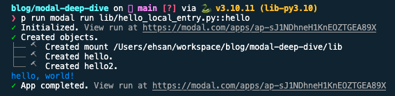

Modal Labs Deep Dive
Prelude
In this post, we’re going to deep dive into one of my favourite tools that are revolutionizing how Python code is run in cloud and it’s especially aimed at the computing stack for Machine Learning / Deep Learning applications, called Modal which has recently gone GA!
There are almost no resources besides the official documents and examples. I have been using Modal for almost a year and this post sums up crucial points on using Modal and does a series of deep dives into its inner working. Finally, we end with a few best practices.

Infrastructure from Code
In the last couple of years, there has been a new trend aimed at simplifying code deployment in cloud. If you’ve likely seen drawbacks withInfrastructure-as-Code (IaC)tools such as Terraform, Pulumi, AWS CloudFormation, etc., you’re not alone.Each tool has its own terminology, often in the form of a DSL, library/package, or YAML extension 🤕Decoupled from the application code, meaning that using resources in code requires separately creating the necessary cloud resources
For certain applications and larger companies, these requirements might be manageable. However, for smaller companies and individual developers, they can be overwhelming.
So, the main idea ofInfrastructure-from-Code (IfC)is to simplify IaC by being as close to the application as possible. This means introducing little to no new syntax and providing a way to create and manage cloud resources needed for deploying the application as conveniently as possible, for example, with a CLI.
In fact,Modal is an IfC solution for the computing stack, especially for ML/DL apps.
If you want to know more about IfC, have a look at my awesome-infrastructure-from-code resources.
Modal’s Pitch
Modal’s goal is tomake running code in the cloudfeel likeyou’re running code locally. You don’t need to run any commands to rebuild, push containers, or go to a web UI to download logs.
Installation and Official Guide
First, make sure you’re signed in modal.com. Then the installation guide
pip install modal
python3 -m modal setupinstalls the modal package which comes with its own CLI. Also configures the CLI and sets up the API token once. After that, let’s create a dev environment for our deep dive
modal environment create dev
modal config set-environment devNote: All codes are available in my GitHub.
Runtime Spec via stub
Let’s see what that means. First,
git clone https://github.com/ehsanmok/blog && cd blog/code/modal-deep-diveand have a look at lib/empty.py
import modal
stub = modal.Stub("empty")Let’s deploy an empty stub via
modal deploy lib/empty.py
(since I’m using Poetry, I factor out the poetry run part).
{kind=link}
and the Modal dashboard view
{kind=link}
Ok! so far so good. We just deployed an empty stub. You can think about it like acontainer(either in abstract sense or like docker container) and here the container is empty! We will expand on that later.
Let’s continue with lib/hello.py
import modal
stub = modal.Stub("hello")
@stub.function()
def hello():
print("hello, world!")Let’s take a look at Stub description (emphasis is mine)
A
Stubis adescriptionof how to create a Modal application. The stub object principally describes Modal objects (Function,Image,Secret, etc.) associated with the application. It hasthree responsibilities:>Syncing of identities across processes (your local Python interpreter and every Modal worker active in your application).>Making Objects stay alive and not be garbage collected for as long as the app lives (see App lifetime below).>*Manage log collection for everything that happens inside your code.See what happens if we deploy our hello world via
modal deploy lib/hello.py
{kind=link}
and dashboard says it’s deployed but is “Currently idle”, because it’s not receiving any input
{kind=link}
in fact in order to execute the stubbed hello function we should do modal run lib/hello.py.
{kind=link}
From the output, we can see it
- Created a mount of some sort (will expand on that later)
- Created our application hello
- Ran the app
- Finally stopped the app
Let’s Dive Deep
What happens when we do modal run?
The official Modal document describes it as
How does it work?
Modal takes your code, puts it in a container, and executes it in the cloud.
Where does it run? Modal runs it in its own cloud environment. The benefit is that we solve all the hard infrastructure problems for you, so you don’t have to do anything. You don’t need to mess with Kubernetes, Docker or even an AWS account.
Official Modal doc
In the outset, Modal intelligentlywraps our code and all of its dependencies (we will get to it later) with metadatacontainerizes*and finally runs / deploys it
A few important points:the containerization isNOTvia docker. Modal has created its ownOCI compatible container servicesuitable for ML apps including heavy duty ones. An issue with the default docker container is being slow when for example including large ML model. Modal has its own container runner (compatible with runc and gvisor) and image builder.Modal has created it’s own filesystem (in Rust 🦀)that maps everything into a performant container via its FS. This innovating approach makes creating and deploying large containers fast and scalable.
We decided to not build this on top of tools like Docker/Kubernetes because we want infrastructure to befast… Modal has no problem building a 100GB container, and then booting up 100 of those containers — you can do the whole thing in a few seconds. This is what it’s built for.
In fact, the essence of docker is chroot and Unix FileSystem. So with their performant custom FS, Modal has successfully created a veryperformant runtime for cloud.
To have a better idea of what is under-the-hood, we use modal shell
modal shell lib/hello.py
✓ Initialized. View run at https://modal.com/apps/ap-t46rTYWQKvHzcvjJ2uvpGr
✓ Created objects.
├── 🔨 Created mount /Users/ehsan/workspace/blog/modal-deep-dive/lib
└── 🔨 Created hello.
Spawning /bin/bash
root@modal:~#
root@modal:~# ls
intro
root@modal:~# cd lib/
root@modal:~/lib# ls
__init__.py empty.py hello.pyInteresting! modal shell spawns bash and shows where our python code is placed. Let’s see what is at the root directory
root@modal:~# cd /
root@modal:/# ls
bin boot dev dummy_plug etc home lib lib64 media mnt modal_requirements.txt opt pkg proc root run sbin srv sys tmp usr var
root@modal:/# cat modal_requirements.txt
# Pins Modal dependencies installed within the container runtime.
aiohttp==3.8.3
aiostream==0.4.4
asgiref==3.5.2
certifi>=2022.12.07
cloudpickle==2.0.0;python_version<'3.11'
cloudpickle==2.2.0;python_version>='3.11'
ddtrace==1.5.2;python_version<'3.11'
fastapi==0.88.0
fastprogress==1.0.0
grpclib==0.4.3
importlib_metadata==4.8.1
ipython>=7.34.0
protobuf>=3.19.0
python-multipart>=0.0.5
rich==12.3.0
tblib==1.7.0
toml==0.10.2
typer==0.6.1
types-certifi==2021.10.8.3
types-toml==0.10.4
typeguard>=3.0.0So it looks like a usual Unix FS with a few new addops like modal_requirements.txt where we can see its content.
cloudpickle
Modal uses cloudpickle which extends Python pickle for sending data back and forth. This is amajor requirementthat data must be cloudpicklable. Note thatnot everything is cloudpicklable.
Here is an example which we can run directly in Modal python environment
root@modal:/# python
Python 3.10.8 (main, Dec 6 2022, 14:24:03) [GCC 10.2.1 20210110] on linux
Type "help", "copyright", "credits" or "license" for more information.
>>> import cloudpickle
>>>
>>> class Unpickleable:
... def __reduce__(self):
... raise TypeError("This object cannot be pickled")
...
>>> obj = Unpickleable()
>>>
>>> try:
... serialized_obj = cloudpickle.dumps(obj)
... except Exception as e:
... print(f"Error: {e}")
...
Error: This object cannot be pickledWhat objects are not cloudpicklable?
Objects that cloudpicklecannotserialize include
1.Objects with unpickleable attributes: If an object has attributes that cannot be pickled (e.g., file handles, network connections), cloudpickle will fail to serialize it. 2.Objects with custom __reduce__ methods that raise exceptions: If an object defines a custom __reduce__ method that raises exceptions, cloudpickle will not be able to serialize it. 3.Objects from C extensions or third-party libraries: Cloudpickle may not be able to serialize objects from C extensions or third-party libraries that do not provide proper serialization support. 4.Some built-in types: While cloudpickle can serialize many built-in types, there may be limitations for certain objects like open file objects, network sockets, or database connections. 5.Functions or lambda functions with closures: Cloudpickle can serialize simple functions, but functions with complex closures (nested functions with captured variables) may not be serialized correctly.
The takeaway is cloudpickle almost always works and if there components that cannot be used there usually is a workaround!
Function proto
Now back to Modal. Among its dependencies, there aregrpclibandprotobuf. If we have look at modal-client/blob/main/modal_proto/api.proto we will see the protobuf definitions. Of particular interest is Function and other related message Function* definitions
message Function {
string module_name = 1;
string function_name = 2;
repeated string mount_ids = 3;
string image_id = 4;
bytes function_serialized = 6;
enum DefinitionType {
DEFINITION_TYPE_UNSPECIFIED = 0;
DEFINITION_TYPE_SERIALIZED = 1;
DEFINITION_TYPE_FILE = 2;
}
DefinitionType definition_type = 7;
enum FunctionType {
FUNCTION_TYPE_UNSPECIFIED = 0;
FUNCTION_TYPE_GENERATOR = 1;
FUNCTION_TYPE_FUNCTION = 2;
}
FunctionType function_type = 8;
Resources resources = 9;
repeated string secret_ids = 10;
RateLimit rate_limit = 11;
WebhookConfig webhook_config = 15;
repeated SharedVolumeMount shared_volume_mounts = 16;
optional string proxy_id = 17;
FunctionRetryPolicy retry_policy = 18;
uint32 concurrency_limit = 19;
bool keep_warm = 20;
uint32 timeout_secs = 21;
PTYInfo pty_info = 22;
bytes class_serialized = 23;
uint32 task_idle_timeout_secs = 25;
CloudProvider cloud_provider = 26;
uint32 warm_pool_size = 27;
string web_url = 28;
WebUrlInfo web_url_info = 29;
// If set, overrides the runtime used by the function, either "runc" or "gvisor".
string runtime = 30;
string stub_name = 31;
repeated VolumeMount volume_mounts = 33;
uint32 allow_concurrent_inputs = 34;
repeated CustomDomainInfo custom_domain_info = 35;
string worker_id = 36; // For internal debugging use only.
bool runtime_debug = 37; // For internal debugging use only.
// TODO: combine into enum?
bool is_builder_function = 32;
bool is_auto_snapshot = 38;
bool is_method = 39;
bool is_checkpointing_function = 40;
// Checkpoint and restore
bool checkpointing_enabled = 41;
message CheckpointInfo {
string checksum = 1;
CheckpointStatus status = 2;
}
CheckpointInfo checkpoint = 42;
repeated ObjectDependency object_dependencies = 43;
}There is a lot going on. We can summarize it as
1.Basic Function Information:module_name, function_name: Identifiers for the module and function.mount_ids, image_id: Refer to identifiers for file systems or images that the function can access or is associated with. 2.Function and Definition Types:DefinitionType and FunctionType enums: These provide information about how the function is defined (serialized, file) and its type (generator, regular function). 3.Execution Resources and Configuration:Resources, RateLimit, WebhookConfig, SharedVolumeMounts: Configuration for computational resources, rate limiting, webhooks for external triggers, and shared file system mounts.proxy_id, retry_policy, concurrency_limit, keep_warm, timeout_secs: Deal with network proxy settings, how to handle retries, concurrency limits, whether to keep the function active in memory, execution timeouts, and more. 4.Advanced Function Settings:PTYInfo, class_serialized, CloudProvider, runtime, stub_name: Related to Python perhaps? (PTY), class definitions, the cloud provider specifics, the runtime environment, and some stub or placeholder name.volume_mounts, custom_domain_info, worker_id: Volume mounts for additional storage, custom domain configurations for web access, and an identifier for internal debugging. 5.Concurrency and Security:allow_concurrent_inputs, secret_ids: Settings for handling concurrent inputs and identifiers for any secrets needed by the function. 6.Debugging and Special Function Types:runtime_debug, is_builder_function, is_auto_snapshot, is_method, is_checkpointing_function: These flags seem to enable debugging, specify different roles or behaviors of the function (like being a builder, supporting auto-snapshots, etc.), and indicate if the function supports checkpointing for state persistence. 7.Checkpointing and Dependencies:checkpointing_enabled, CheckpointInfo, object_dependencies: Related to the ability to checkpoint (save the state) of the function, with details about the checkpoint and dependencies on other objects.
Let’s Come back up, Breathe and Dive Deep Again
Following up on the hello world, what if there are multiple modal @stub.functions under one stub?
import modal
stub = modal.Stub("hello")
@stub.function()
def hello():
print("hello, world!")
@stub.function()
def hello2():
print("hello, world second time!")then modal run lib/hello_local_entry.py fails with
{kind=link}
so we need to specify which one to run. We have two optionsvia CLI: modal run lib/hello_local_entry.py::helloOr specify it in code using @stub.local_entrypoint decorator and modal run lib/hello_local_entry.py (no need for ::hello)
@stub.function()
def hello():
print("hello, world!")
@stub.function()
def hello2():
print("hello, world second time!")
@stub.local_entrypoint()
def main():
hello.local() # semantically is `hello()`Simply calling hello() doesn’t work (anymore) and Modal has its own calling semantics depending on the environment*hello.local() as above
which outputs
*Or via hello.remote()
{kind=link}
@stub.local_entrypoint()
def main():
# hello.local()
hello.remote(){kind=link}
There is a subtle difference in their output. Did you notice it? there is an extra None after hello, world! in the .remote() case. Why?
.local() vs .remote()
What happens with hello.local() tells Modal to run the code locally (your local environment such as laptop) whereas hello.remote() runs the code in the cloud and returns the result back locally.
One important aspect of Modal is it promises simulating cloud code execution to be as similar and local as possible. It also hashot-reloading(when code is run via modal serve which will get to that later) i.e. changing your code is automatically synced and rerun in the cloud (in an ephemeral environment).
Parallel run via .map() and starmap()
Modal functions can be run in parallel using .map(...)
@stub.function()
def my_func(a):
return a ** 2
@stub.local_entrypoint()
def main():
assert list(my_func.map([1, 2, 3, 4])) == [1, 4, 9, 16].starmap(...) is like map but spreads arguments over multiple function arguments
@stub.function()
def my_func(a, b):
return a + b
@stub.local_entrypoint()
def main():
assert list(my_func.starmap([(1, 2), (3, 4)])) == [3, 7]Lookup and Spawn Functions Remotely
So far, we have tested using one stub. It’s possible to havemultiple stubs, too. In that case, it’s possible to lookup a function or spawn it remotely (via a handle). In order to do that, the function that we are looking up or spawningmust be already deployed(modal deploy) whereas if it’s in the ephemeral phase it can get deleted on the fly we can look it up in different context viamodal.Function.lookup(STUB_NAME, FUNCTION_NAME)modal.Function.from_name(STUB_NAME, FUNCTION_NAME)
For example, lib/square.py and model deploy square.py (notemustbe deployed to be found)
import modal
stub = modal.Stub("my-shared-app")
@stub.function()
def square(x):
return x * xand lib/cube.py can look it up via either Function.from_name or Function.lookup and then modal run cube.py
import modal
stub = modal.Stub("another-app")
stub.square = modal.Function.from_name("my-shared-app", "square") # <-- NOTE: this must be deployed otherwise `modal run` won't find it
@stub.function()
def cube(x):
return x * stub.square.remote(x)
@stub.local_entrypoint()
def main():
assert cube.remote(42) == 74088It’s also possible to remotely modal.Function.spawn a function which doesn’t wait for the result but returns FunctionCall object which can bepolled. This is useful esp. given a job queue and (async) spawn / poll for long running jobs in the background.
To see it in action, run modal run lib/cube_spawn.py
import time
import modal
from modal.functions import FunctionCall
stub = modal.Stub("cube-spawn")
stub.square = modal.Function.from_name(
"my-shared-app", "square"
) # <-- NOTE: this must be deployed otherwise `modal run` won't find it
@stub.function()
def spawn_square(x):
call = stub.square.spawn(x)
return {"call_id": call.object_id}
@stub.function()
def poll(call_id):
fcall = FunctionCall.from_id(call_id)
try:
# 5 seconds timeout to simulate a long running job
ret = fcall.get(timeout=5)
except TimeoutError:
print("waiting for result")
return
return ret
@stub.local_entrypoint()
def cube():
call = spawn_square.remote(42)
call_id = call["call_id"]
assert call_id is not None
ret = poll.remote(call_id)
assert ret * 42 == 74088The important point is the caller that spawns square returns a call_id which can be retrieved and polled via FunctionCall.from_id(call_id). A less contrived example is in OCR webapp example which is
@web_app.post("/parse")
async def parse(request: fastapi.Request):
parse_receipt = Function.lookup("example-doc-ocr-jobs", "parse_receipt")
form = await request.form()
receipt = await form["receipt"].read() # type: ignore
call = parse_receipt.spawn(receipt)
return {"call_id": call.object_id}
@web_app.get("/result/{call_id}")
async def poll_results(call_id: str):
from modal.functions import FunctionCall
function_call = FunctionCall.from_id(call_id)
try:
result = function_call.get(timeout=0)
except TimeoutError:
return fastapi.responses.JSONResponse(content="", status_code=202)
return resultand the frontend code uses them like
const resp = await fetch("/parse", {
method: "POST",
body: formData,
});
...
const _intervalID = setInterval(async () => {
const resp = await fetch(`/result/${callId}`);
if (resp.status === 200) {
setResult(await resp.json());
}
}, 100);
setIntervalId(_intervalID);Async Support
Modal stubbed functions can be async as well. The only thing that changes is how they are called; await is prepended as well as .aio appendedfunc.remote(…)⟹await func.remote.aio(…)The magic is behind Modal’ssynchronicitylibrary that makes sync and async functions to be used uniformly.
Class Support
Modal supports decorating Python classes with @stub.cls() but requires __(a)enter__ with/without __(a)exit__ methods and @modal.method decorator for the class methods. The __(a)enter__ and __(a)exit__ come with the the followingcaveat> The syntax and behavior for the __(a)enter__ and __(a)exit__ functions are similar to context managers. However, theydo nothave the exact same semantics as Python’s corresponding special methods with the same name. __(a)enter__ and __(a)exit__. > > > >The container entry handler is called when a new container is started. This is useful for doing one-time initialization, such as loading model weights or importing packages that are only present in that image.> > Mo
from modal import Stub, method
stub = Stub()
@stub.cls()
class Model:
def __enter__(self):
self.model = pickle.load(open("model.pickle"))
@method()
def predict(self, x):
return self.model.predict(x)
@stub.local_entrypoint()
def main():
Model().predict.remote(x) # <-- it's not like context manager `with ...` at all!In fact, @stub.cls is more like asyntactic sugar for functionsthat needs to load an object or make a connection once and proceed with the rest of the work. The __(a)enter__ is particularly useful for example, when we want to load a large ML model once and use it for inference.
Build time Dependencies and Resources
modal.Image
So far, we have created and run functions with no dependency. Modal supports specifying build time dependencies via the Image object. For example,
image = Image.debian_slim().pip_install("pandas", "numpy")
@stub.function(image=image)
def my_function():
import pandas as pd
import numpy as np
...The Image object is very versatile. One can do*pip install targeting GPU
image = (
Image.debian_slim(python_version="3.10")
.pip_install(
"optimum[onnxruntime-gpu]==1.7.3",
"transformers[onnx-gpu]==4.28.1",
gpu="A10G",
)
)- apt install:
Image.debian_slim().apt_install("ffmpeg")- add custom commands:
Image.debian_slim().apt_install("curl").run_commands(
"curl -O https://raw.githubusercontent.com/opencv/opencv/master/data/haarcascades/haarcascade_frontalcatface.xml",
)- build from dockerhub registry with a specific python version
Image.from_registry("huanjason/scikit-learn", add_python=3.10)- Conda
Image.conda().conda_install("theano-pymc==1.1.2", "pymc3==3.11.2")- Poetry
image = modal.Image.debian_slim(python_version="3.10").poetry_install_from_file("pyproject.toml", without=["dev"])- from local Dockerfile
Image.from_dockerfile("Dockerfile")- Or any combinations (also supports poetry) and with custom
run_function
def download_models():
from sentence_transformers import SentenceTransformer
SentenceTransformer(settings.EMBEDDING_MODEL_NAME, cache_folder=EMBEDDING_MODEL_DIR)
image = (
modal.Image.debian_slim(python_version="3.10")
.env({"ENV": ENV})
.run_commands("python -m pip install --upgrade pip")
.poetry_install_from_file("pyproject.toml", without=["dev"])
.pip_install(
"torch==2.1.0+cu118",
find_links="https://download.pytorch.org/whl/torch_stable.html",
)
.env({"HF_HUB_ENABLE_HF_TRANSFER": "1"})
.env({"TRANSFORMERS_CACHE": EMBEDDING_MODEL_DIR})
.run_function(download_models)
)If you have suffered from Python lack of proper dependency management, you will like this very powerful approach (yes, there are some caveat in mixing but you get the point). Also we can see how much it wouldsaveus from write our own Dockerfile, downloading the modal and include it in the image.
So far, we have established the mental model behind Modal (stubbed) functions as containers and how dependencies can be specified but for running a full-fledge app in cloud Modal defines its own resources. To start, similar to how docker-compose or k8s have the notion of Volume and Secrets, those can be specified in the stub too.
Modal.Secret
For example, Secrets can either be defined and set via Modal’s dashboard or from .env file
secret = modal.Secret.from_dotenv(".env"))
@stub.function(
image=image,
secret=secret)
def example():
....Modal.Volume and Modal.NetworkFileSystem
Volume is almost the same. As of writing this post, Modal has two ways to include Volume.modal.Volume: mutable volume built for high-performance file servingmodal.NetworkFileSystem: A shared, writable file system accessible by one or more Modal functions.
Both must be attached to the stub like stub.volume and mapped in @stub.function runtime
import pathlib
import modal
p = pathlib.Path("/root/foo/bar.txt")
stub = modal.Stub()
stub.volume = modal.Volume.new()
@stub.function(volumes={"/root/foo": stub.volume})
def f():
p.write_text("hello")
print(f"Created {p=}")
stub.volume.commit() # Persist changes
print(f"Committed {p=}")and
import modal
stub = modal.Stub()
volume = modal.NetworkFileSystem.new()
@stub.function(network_file_systems={"/root/foo": volume})
def f():
pass
@stub.function(network_file_systems={"/root/goo": volume})
def g():
passBoth can also be examined with CLI too, modal volume and modal nfs.
Other resources like CPU/GPU, memory and more runtime configurations are also supported. For example,
@stub.function(
image=image,
secret=secret,
concurrency_limit=4,
cpu=8,
gpu="t4",
memory=1024 * 8
timeout=5 * 60,
keep_warm=True,
cloud="aws", # as of now, 'aws', 'gcp' and oracle cloud are supported
)
@modal.asgi_app(label="server")
def main() -> Callable:
app = get_app()
return appBilling is also pay as you go.
Build time vs Runtime Mental Model
Understanding the distinctions is very important for writing working apps. Anything that is definedoutsideof decorated stub using Modal constructs such asImage, Secret etc. are build timewhereas anything that’s specifiedinside @stub.function(...) or @stub.cls(...) is for runtime.
For example,
secret = modal.Secret.from_dotenv(".env"))
image = (
modal.Image.debian_slim(python_version="3.10")
.env({"ENV": ENV})
.run_commands("python -m pip install --upgrade pip")
.poetry_install_from_file("pyproject.toml", without=["dev"])
)are happening at build time so ENV and .env must be available at the build time (including the imports) and the runtime specifications is done as usual. At the runtime, Modal allocates cloud resources, injects image, secrets etc. and runs our application.
@stub.function(
image=image,
secret=secret,
cpu=8,
gpu="any",
memory=1024 * 8,
cloud="aws",
)
def main():
...Web Endpoints
Another advantage of Modal is it can turnany functionto a web endpoint via @web_enpoint. It basically wraps the function in a FastAPI app. It can also work with any WSGI and ASGI compliant frameworks as well, including Flask, FastAPI, Sanic etc.
from modal import Stub, web_endpoint
stub = Stub()
@stub.function()
@web_endpoint()
def f():
return "Hello world!"For development, we can use modal serve lib/hello_server.py which supports hot-reloading of local changes automatically. And for deployment the usual modal deploy just works. See official docs.
This works nicely esp. for rapid development, however, in my opinion when the number of endpoints grows it’s better to use the normal FastAPI or Flask way and hand it to Modal for serving via @asgi_app or @wsgi_app, respectively.
from fastapi import FastAPI, Request
from fastapi.responses import HTMLResponse
from modal import Image, Stub, asgi_app
web_app = FastAPI()
stub = Stub()
image = Image.debian_slim().pip_install("boto3")
@web_app.post("/foo")
async def foo(request: Request):
body = await request.json()
return body
@web_app.get("/bar")
async def bar(arg="world"):
return HTMLResponse(f"<h1>Hello Fast {arg}!</h1>")
@stub.function(image=image)
@asgi_app()
def fastapi_app():
return web_appModal Supports Crob-jobs, Tunnel, Sandbox and more
There are more resource objects available. Make sure to check out the official guide and reference doc. Some of the important ones areDict: distributed dictionaryQueue: distributed queue backed by RedisVolumeNetwork Filesystem (NFS)Period (for Cron jobs)SecretsTunnel…
modal launch jupyter/vscode
Modal CLI has the option oflaunching jupyter or vscode from modal by also configuring CPU/GPU and memory as needed. This essentially makes manual SSHing and to EC2 instancesobsolete. Jupyter is a great tool for exploratory part of ML such astraining. The vscode is just another cherry on top. Here I have launched vscode with T4 GPU using
modal launch vscode --gpu T4
{kind=link}
The CLI command is basically running the following which you can customize as well.
# Copyright Modal Labs 2023
# type: ignore
import os
import secrets
import socket
import subprocess
import threading
import time
import webbrowser
from typing import Any
from modal import Image, Queue, Stub, forward
args: Any = {'cpu': 8, 'memory': 32768, 'gpu': 'T4', 'timeout': 3600}
stub = Stub()
stub.image = Image.from_registry("codercom/code-server", add_python="3.11").dockerfile_commands("ENTRYPOINT []")
stub.q = Queue.new()
def wait_for_port(data):
start_time = time.monotonic()
while True:
try:
with socket.create_connection(("localhost", 8080), timeout=15.0):
break
except OSError as exc:
time.sleep(0.01)
if time.monotonic() - start_time >= 15.0:
raise TimeoutError("Waited too long for port 8080 to accept connections") from exc
stub.q.put(data)
@stub.function(cpu=args["cpu"], memory=args["memory"], gpu=args["gpu"], timeout=args["timeout"])
def run_jupyter():
os.chdir("/home/coder")
token = secrets.token_urlsafe(13)
with forward(8080) as tunnel:
url = tunnel.url
threading.Thread(target=wait_for_port, args=((url, token),)).start()
subprocess.run(
["/usr/bin/entrypoint.sh", "--bind-addr", "0.0.0.0:8080", "."],
env={**os.environ, "SHELL": "/bin/bash", "PASSWORD": token},
)
stub.q.put("done")
@stub.local_entrypoint()
def main():
stub.run_jupyter.spawn()
url, token = stub.q.get()
time.sleep(1) # Give Jupyter a chance to start up
print("\nVS Code on Modal, opening in browser...")
print(f" -> {url}")
print(f" -> password: {token}\n")
webbrowser.open(url)
assert stub.q.get() == "done"Best Practices
Since Modal is new there are almost no written best practices available. Here are my suggestions after using Modal for almost a year and trying many things
Single stub vs Multi-stub
Initially there seems to be a tendency to create onenewstub per Modal function or class and use CLI to run / deploy each. If the application is simple and only a couple of stubs are used, is fine but using a single stub is not only possible also definitely more convenient for running, testing and deploying apps. In fact,a single stub can contain any number of functions and each scale independently. Sodeploy all together and scale independentlyis the idea here. At the root of my Python applications, I have
myapp /
__init__.py
stub.py
app /
api.py
services /
service1.py
service2.pywhere stub.py defined a global stub like
import modal
from myapp.settings import get_settings
settings = get_settings()
stub = modal.Stub(settings.STUB_NAME)
stub.queue = modal.Queue.new().persisted(label=settings.STUB_QUEUE_NAME)and I importallthe modules that use the stub in the root __init__.py
from myapp.api.app import *
from myapp.services.service1 import *
from myapp.services.service2 import *In Python, this is not necessarily a good practice for libraries but for Modal apps isfine.
Having this allows running the entire application with a single command modal deploy myapp without specifying which stub to be deployed.
Testing via @stub.local_entrypoint()
We can test each individual Modal function via @stub.local_entrypoint(). For example, in services/service1.py, we can have a embedding service and test it using
ENV=test modal run myapp/services/service1.py
from pathlib import Path
from typing import List
import numpy as np
import tqdm
import modal
from myapp.settings import get_settings
from myapp.stub import stub
settings = get_settings()
secret = modal.Secret.from_dotenv( ".env"))
def download_models():
...
image = (
modal.Image.debian_slim(python_version="3.10")
...
.run_function(download_models)
)
@stub.cls(image=image, secret=secret)
class BatchEmbedding:
def __enter__(self):
from sentence_transformers import SentenceTransformer
self.model = SentenceTransformer(
settings.EMBEDDING_MODEL_NAME,
cache_folder=EMBEDDING_MODEL_DIR,
)
return self
@modal.method()
def embed(self, texts) -> np.ndarray:
vectors = self.model.encode(
texts,
show_progress_bar=True,
batch_size=settings.EMBED_BATCH_SIZE,
)
return vector
class DocumentEmbeddingFn:
def __call__(self, document: Document) -> List[np.ndarray]:
if not len(document):
return []
batches: List[List[TextDoc]] = [
document.chunks[i : i + settings.EMBED_BATCH_SIZE]
for i in range(0, len(document), settings.EMBED_BATCH_SIZE)
]
chunked_batches: List[List[str]] = [[chunk.text for chunk in batch] for batch in batches if len(batch)]
vectors: List[np.ndarray] = []
for batch in tqdm(list(BatchEmbedding().embed.map(chunked_batches))):
vectors.extend(batch)
return vectors
if settings.ENV == "test":
import io
from pathlib import Path
from fastapi import UploadFile
@stub.local_entrypoint()
async def test_embedding():
logger.info("Testing embedding service with sample PDF file")
data = Path(__file__) / "tests/data.pdf"
with open(str(data), "rb") as fin:
file = UploadFile(
file=io.BytesIO(fin.read()),
filename="data.pdf",
)
doc = ..
embeddings = DocumentEmbeddingFn()(doc)
assert len(embeddings) == len(doc)Managing Dependencies
If you’re like me who want all dependencies to be in the same place as much as possible, I recommend using Poetry and grouping your dependencies. The simplest default case is including dev dependencies. Modal Image can build them using
poetry_install_from_file("pyproject.toml", without=["dev"])It’s also possible to have a fine-grained grouping like the following in pyproject.toml
[tool.poetry.dependencies]
python = ">=3.10,<3.12"
modal = "^0.52.3366"
[tool.poetry.core.dependencies]
numpy = "^1.20.0"
pydantic = "^2.3.0"
[tool.poetry.db.dependencies]
pymongo = { version = "^4.5", extras = ["srv"] }
[tool.poetry.service1.dependencies]
...
[tool.poetry.service2.dependencies]
...and build each stubbed function or class image using
poetry_install_from_file("pyproject.toml", with_=["core", "db", "service1"])this way centralizes the dependencies and makes upgrading and managing them easier esp. for medium to large projects than inlining them via Image.debian_image().pip_install(...).
Observability
Modal offers granular logs for each functions as well as usage. I’ve been using Sentry along side Modal and hasn’t disappointed me all at. I’ve found its distributed tracing and performance monitoring adequate which help debugging eps. at times when finding the relevant stacktraces is hard from the Modal logs.
Acknowledgement
I want to thank Modal engineers in particular Akshat Bubna (Modal’s co-founder), Jonathon Belotti and Luis Capelo for their immense help, patient and being very responsive to my queries throughout using Modal. From my experience, Modal’s customer service is fantastic despite it being run by small developer team.